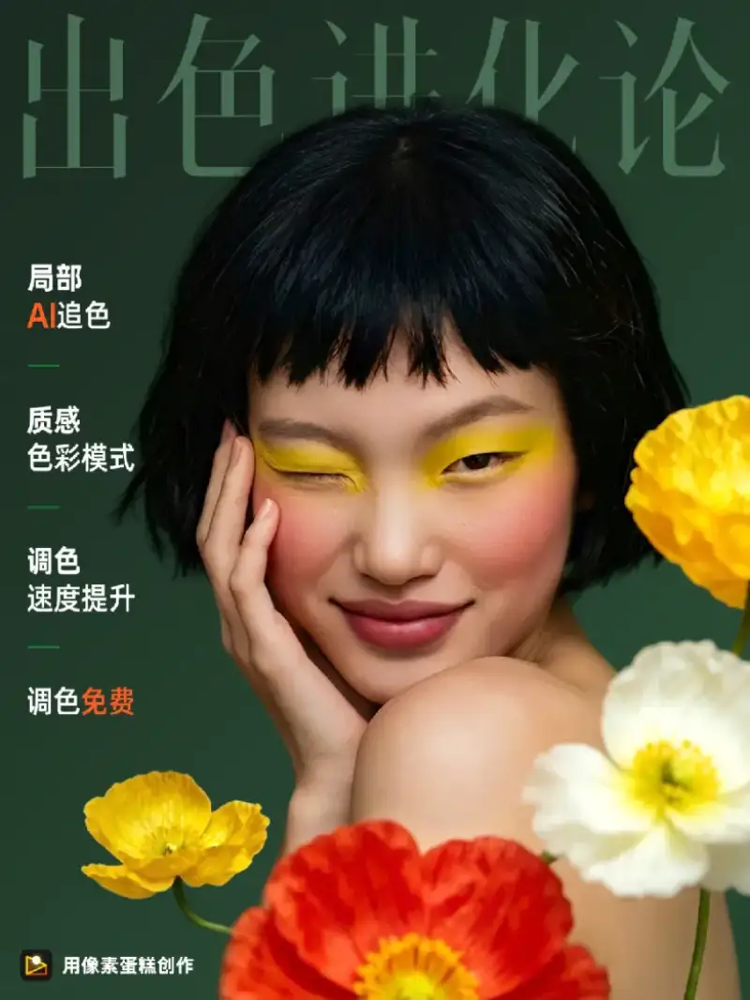

portant;">On September 10, the 2026 Pixel Series autumn launch event opened at the Conrad Xiamen. It marked the fifth anniversary of the Pixel Series. Under the theme A New Starting Point, Pixel Cake 10.0 for PC made its debut. The iPad version, the phone version, Pixel Cheese, and Pixel Toast all received updates at the same time. Leaders of photography industry associations, Chen Zeqing, co-founder of the Pixel Series, and well-known photographers such as Zhang Yue and Shen Jide (Kido) attended to share the moment.
portant;">
portant;">Five Years On: From People Looking for Tools to Tools Looking for People
portant;">“Can we make professional post-production a little simpler?” This opening question set the tone. It also went straight to the core of the Pixel Series five-year answer.
portant;">Over the past five years, the technical path of the Pixel Series has been clear. First it defined operating standards, so that complex professional post-production had a repeatable workflow for the first time. Then it made results visible, so editing was no longer a blind, repeated trial. Next it moved into the batch era and raised efficiency across the whole chain. It turned the efficiency gain of a single photo into an efficiency gain for the whole delivery chain. Today, AI point retouching officially arrives.
portant;">From people looking for tools to tools looking for people, and from manual operation to creating in a conversation, the tool now comes to the person. From tool to partner, this is the Pixel Series latest answer to the five-year question.
portant;">
portant;">
portant;">
portant;">
portant;">Pixel Cake 10.0: Retouch with One Click, No Limits on Professional Color
portant;">The focus of the launch event was Pixel Cake 10.0. This version is anchored on the idea of moving forward with the ten. The update covers five areas: portrait retouching, creative generation, pet retouching, color science, and a full UI refresh. The new AI point retouching feature is a first in the industry. One tap and it understands what you want. Whether the subject is a person, a landscape, clothing, or a pet, the user taps once and the tool suggests the right function. There is no need to search through layered menus. Generative fill can also talk from the picture. It uses AIGC to complete the creative idea. The well-known fashion photographer Zhang Yue shared his experience on site. His words struck a chord with the people in the industry. He said: “What really stays in your workflow is never the loudest voice. It is the tool that quietly solves your real problem.”
portant;">The event also announced a major decision. The member retouching and color grading features of Pixel Cake and Pixel Cheese are now free forever. Users can use hard-core features such as AI color matching and local color grading at no cost. Color grading is the step in professional post-production with the highest barrier, and the step that shows taste the most. Making it free means the Pixel Series wants professional-grade color to be no longer a privilege of a few. The move drew long applause on site.
portant;">Behind all of this is the technical base the Pixel Series has built over five years. It is now the only software maker in the country with core Raw engine technology. Its self-developed 16-bit AI Raw engine supports 16-bit color depth in adjustment and output. It can edit and export the final work at higher quality. It keeps high-fidelity detail and a wide color range. Compared with an ordinary 8-bit photo, it offers more room for post-production. The Pixel Series now serves tens of thousands of commercial photography studios. Its fastest time from shooting to delivery is three minutes. The unit of time in professional post-production is being redefined.
portant;">
portant;">

portant;">
portant;">
portant;">Updates Across Devices and a Wider Ecosystem: Professional Creation Moves from the Studio into Daily Life
portant;">For different creative settings, the Pixel Series updated several products at the same time. The iPad version of Pixel Cake focuses on being a travel photography tool. It joins the full flow of shooting, retouching, viewing, and taking the files away. At the event, the fashion photographer Shen Jide (Kido) gave a striking side-by-side demo. In the past, outdoor shooting was like opening a blind box. You sent the files back, waited for the retouch, and reworked them. The best photos from a shoot often sat on a hard drive for days. Today, the iPad shoots and retouches at once, with a full preview of the whole image. From pre-color grading at the scout to on-site delivery, it flows in one go. He calls Pixel Cake for iPad his standard outdoor tool. On site he showed how to use an ethnic color language to complete a whole series from idea to final image.
portant;">The phone version of Pixel Cake puts professional power in your pocket. It has more than 420 functions for niche settings such as following idols, cosplay, travel, and concerts. It handles the refined, living feel of the moment, the CG feel that breaks out of the frame, and the live feel that starts at zero frames. Pixel Toast keeps working in the field of moving images. It moves from earning revenue with a single product to a new starting point in both image and video. When a client needs photos and video at the same time, the second growth curve of a photography studio is taking shape here.
portant;">Pixel Cheese is a photo livestream and scenic-area image platform. In the next stage, it will expand from serving single creators to the image ecosystem of a whole scenic area or event. At the event, Pixel Cheese and its hundred-city sites announced that their program to help refresh 100 sites stays active. It pushes the build of smart scenic-area travel photography. The deployment of a context-aware large model plays a key role here. The pilot at Shenxianju in Taizhou is an example. By tying its popular photo spots closely together, it has doubled its income. It offers a copyable model for a smart scenic area.
portant;">
portant;">
portant;">
portant;">The Pixel Series starts from one piece of software and draws the outline of an image-creation ecosystem. They said: “Our role has never changed. We help every living, creative person create more simply and with more joy.” To every photographer who came from far away, the launch event had one more thing to say: “Five years on. Welcome home.”